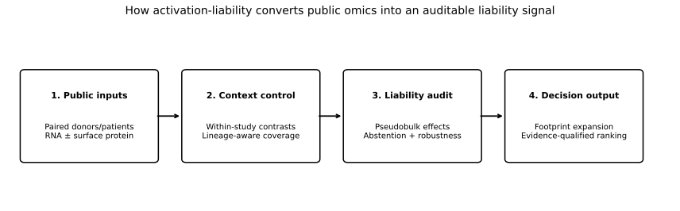
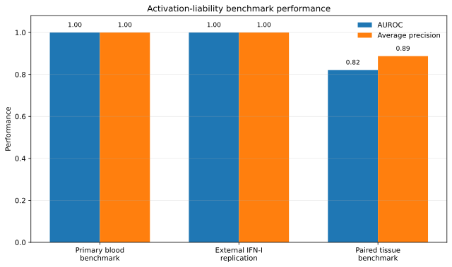
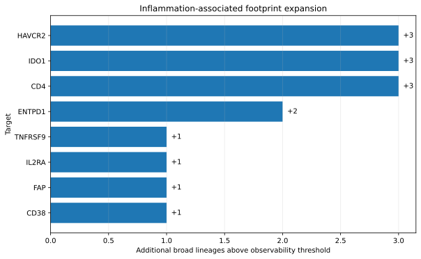

activation-liability
An auditable detector of activation-induced erosion of apparent tumour selectivity for surface targets.
Repository READMEPublic DriveNext phase
Scientific boundary: this is a liability detector with abstention. It does not predict toxicity, establish a therapeutic window or prove accessible surface protein from RNA.

Why it matters
Targets can appear selective in resting healthy references and become broadly expressed when normal cells encounter interferons, innate activation, lymphocyte stimulation or tissue inflammation. alia measures that expansion using paired donor/patient contrasts and preserves the evidence and uncertainty behind each call.
Current evidence
4
blood/sorted-cell public cohorts
2
paired inflamed tissue cohorts
0.821
tier-1 tissue AUROC
8
targets with positive footprint expansion


Next phase
GSE190564 adds paired colitis tissue with GEX and CITE-seq ADT. It is documented and downloadable, but it is not yet part of the headline results.